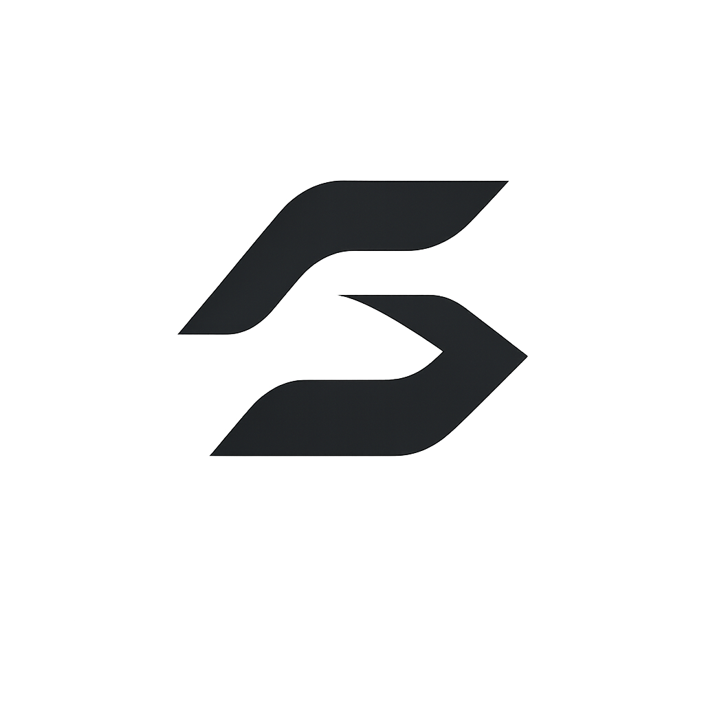
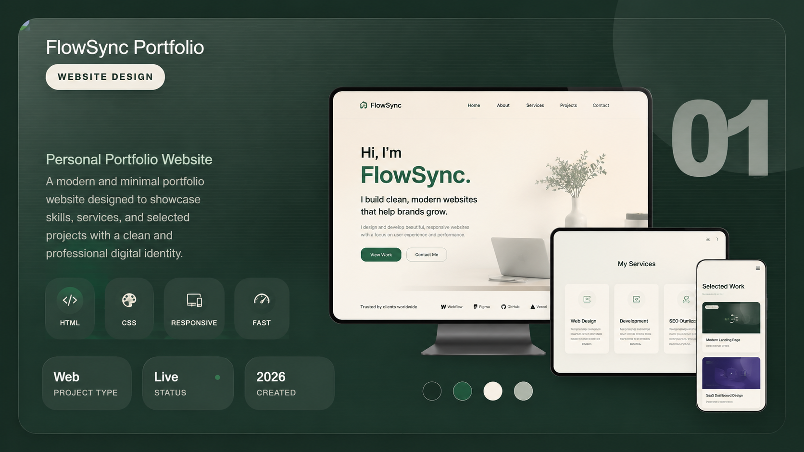

Abid Hasan FlowSync Project Vault
Design Vault
Living archive for projects that shaped the site.
A polished FlowSync project vault for portfolio work, UI directions, service pages, brand experiments, and visual systems. Each orbit file opens one project with proof, tags, and a quick next step.
06
Design files connected inside your FlowSync project
vault.
Project
Vault
Vault

Website Design 01FlowSync Portfolio
A personal portfolio website built with a calm digital identity, service sections, project showcase, and contact-focused flow.
Web
Project Type
Live
Status
2026
Created